A little band,
a lot of pedals.
QUARTET turns the FM-1 into a groovebox built around effects pedals, made for musicians. Drums, bass, pads and a lead each have their own pedalboard. Make a beat, stomp on fuzz or spring reverb while it plays, jam over the top and turn it into a song.
Download How to install Play it in your browser Quick start37 pedals · 72 sounds · 23 drum kits · ten patterns per instrument · ten songs. Press PLAY to hear the demo.

Home: your four players, the chosen one open, its pedalboard along the bottom.
Quick start
Five steps, a minute or two.
Hear the band
- Press PLAY. The demo starts: piano, strings, a Reese bass and an 808.
- MASTER is the volume. PLAY again stops.
Pick a player and a sound
- SELECT chooses who you play: LEAD PAD BASS DRUMS.
- Play the keys. Turn ALGORITHM to change the sound.

Stomp on a pedal
- With the lead chosen, FX SEL ENV LFO are its four pedals. Tap ENV to switch on Distortion.
- Hold ENV to open it. Turn KNOB 4 for more dirt.
- Turn ALGORITHM for a different pedal (37 in all).

Make a beat
- Stop the music. Choose DRUMS and turn PRESETS to B (empty).
- Press SEQ. A black key picks a drum; white keys place its hits.
- Press PLAY. It loops.

Add a bassline
- Press HOME. Choose BASS and pattern B.
- Press SEQ, then REC. Tap REC again and play. Tap REC to stop.
- Your work saves itself.
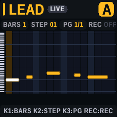
Find your way around
These work the same on every page.
SELECT
Always the instrument.
ALGORITHM
Chooses on the page: a sound, a pedal, a step.
PRESETS
The pattern (on some pages: the kind of pedal, the song).
KNOB 1–4
The settings on screen, left to right.
TAP OR HOLD
Tap to switch, hold to open.
HOME
Back home, from anywhere.
Instruments and sounds
Four instruments, each in its own colour. SELECT picks one, ALGORITHM changes its sound.
The home screen
A row per instrument shows its sound and pattern; the chosen one opens to show its steps. A>C means C plays next. A muted instrument turns red. The top line shows tempo, swing (SW) and octave; the bottom shows the chosen instrument's pedals, lit when on.
| Instrument | Plays |
|---|---|
| LEAD | melodies and riffs, up to four notes |
| PAD | chords, up to four notes |
| BASS | basslines, one note at a time |
| DRUMS | kick, snare, hi-hat, open hat, clap and percussion |
Changing sounds
Turn ALGORITHM on the home screen to step through the sounds (on drums, the kits). It works while the music plays. For a list by group, press EDIT: KNOB 2 picks the group, KNOB 3 the sound.
Two leads, three pads
The first three instruments can each be a lead, pad or bass: press EDIT and turn KNOB 1. Two of a kind show as LEAD 1 and LEAD 2. Drums are always the fourth.

The sound browser.

Two leads.
Put the bass on Upright or Tuba.
Put the pads on Choir or Organ.
Play one beat on Jazz, CR-78 and Kitchen kits.
All the sounds
Four groups each, plus your own (USER).
| Lead | Sounds |
|---|---|
| KEYS | Piano, Xylophone, Music Box, FM Bell, Tine Keys, Clavinet |
| BAND | Hammond, Brass, Electric Guitar, Synth Brass, Flute, Harmonica |
| SYNTH | Mini Lead, Sync Lead, PWM Lead, Acid Lead, Chiptune, Porta Lead |
| ODD | Theremin, Glass Harp, Laser, Bowed Metal, Sine Swarm, Stepper |
| Pads | |
| STRINGS | Strings, Solina, Choir, Acoustic Guitar, Harp, Digital Choir |
| KEYS | Electric Piano, DX Piano, Organ, Handpan, Vibes, Marimba |
| SYNTH | Juno Strings, Poly Synth, PWM Pad, Prophet Brass, Warm Analog, Warm Synth |
| ATMOS | Drone, Frozen, Cathedral, Sweep, Glass Pad, Tidal |
| Bass | |
| ACOUSTIC | Upright, Slap, Plucked, Tuba, Fretless, Picked |
| ANALOG | Moog Bass, 303 Line, Sub Bass, Synth Bass, Rubber Bass, Slide Sub |
| DIGITAL | DX Bass, Reese, Electro Bass, FM, Deep Reese, Synth Pluck |
| WILD | Fuzz, Wobble, Growl, Bubble, Womp, Dirt Bass |
| USER | Your own: up to 8 per type. |
| Drums | Kits |
|---|---|
| GROOVE | Rock, Hip-Hop, Lo-Fi, Breaks, Jazz, Funk |
| MACHINES | CR-78, Mini Pops, LM-1, 606, 808, 909 |
| ELECTRO | Electro, Techno, Trap, House, Dub, Industrial |
| ODD | Toy, Glitch, Metal, Noise, Kitchen |
| USER | Your own: up to 4. |
The LM-1 kit uses samples of a real Linn LM-1 (its clap and perc keys are toms). The perc drum changes with the kit.
Sounds from older saves that are no longer listed still load and play.
The pedalboard
Pedals are the heart of QUARTET. Each instrument has four, chosen from 37, and you can change them while the music plays.
How to use them
| On / off | Tap FX SEL ENV or LFO. The button lights when it's on. |
| Open | Hold the button. |
| Adjust | KNOB 2 3 4 are its three knobs. KNOB 1 switches it on or off. |
| Change | ALGORITHM picks a pedal; PRESETS jumps to another kind (drive, filter, modulation, space, pitch, other). |
Pedals follow the instrument chosen with SELECT. Each starts with Reverb, Delay, Distortion and Chorus.
The Distortion pedal.

Tap a pedal: its name shows.
Try these
On the lead, pick Piano or Hammond and tap ENV.
On the pads, tap LFO.
On the drums, hold FX, turn ALGORITHM to Spring Reverb and raise KNOB 2.
Hold a pedal button, turn PRESETS to OTHER and try Old Media, Underwater or Glitch.
All four at once
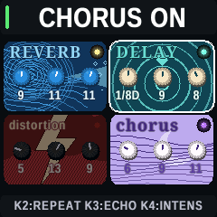
EDIT twice.
Press EDIT twice to see all four pedals. ALGORITHM picks one, KNOB 1 switches it on or off, KNOB 2–4 adjust it and PRESETS swaps it. The sound goes through them in order: FX, SEL, ENV, LFO.
Meet the pedals
All 37, by kind. Knobs are listed as KNOB 2, 3, 4.
DRIVE
Grit and growl, from warm crunch to all-out fuzz.
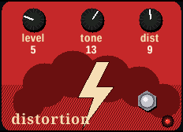
Distortion
Classic rock crunch: a hot, saturated edge that gets heavier as you turn it up.
LEVEL · TONE · DIST
Try it on a piano or Hammond for a gritty keyboard.
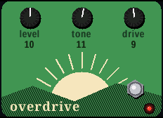
Overdrive
Softer, tube-amp warmth that starts clean and breaks up as you push it.
LEVEL · TONE · DRIVE
Try it on electric piano or bass.
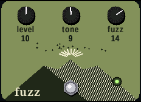
Fuzz
A thick, buzzy sixties fuzz box.
LEVEL · TONE · FUZZ
Try it on a synth lead or a bassline.
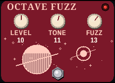
Octave Fuzz
Fuzz with an extra note an octave up: ringing and nasal.
LEVEL · TONE · FUZZ
Try it on lead solos.
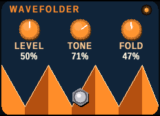
Wavefolder
Folds the sound back on itself for a bright, metallic, buzzing edge.
LEVEL · TONE · FOLD
Try it on bass or pads.
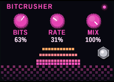
Bitcrusher
Crunchy low-resolution digital, from old game console to broken radio.
BITS · RATE · MIX
Try it on drums.
FILTER
Make a sound talk.
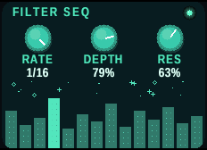
Filter Seq
A filter that steps open and shut in time with the beat, turning held chords into a rhythm.
RATE · DEPTH · RES
Try it on long pad chords.
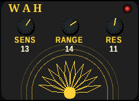
Wah
Opens up the harder you play, like a wah pedal following your touch.
SENS · RANGE · RES
Try it on a funky Clavinet or guitar.
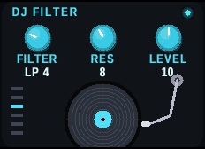
DJ Filter
One knob from muffled to thin, like a DJ mixer: sweep the drums down for a breakdown and back up for the drop.
FILTER · RES · LEVEL
Try it on drums, for a breakdown.
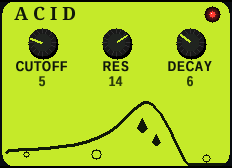
Acid
A squelchy filter that snaps open on every note: the sound of an acid bass line, on any instrument.
CUTOFF · RES · DECAY
Try it on bass, pads, even piano.
MODULATION
Movement, width and wobble.
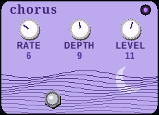
Chorus
A gently drifting copy that makes the sound wide and lush.
RATE · DEPTH · LEVEL
Try it on pads and electric piano.
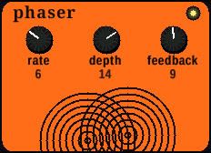
Phaser
A swirling, whooshing sweep.
RATE · DEPTH · FEEDBACK
Try it on organ or strings.
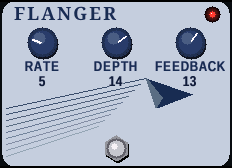
Flanger
A jet-plane swoosh from a tiny, sweeping echo.
RATE · DEPTH · FEEDBACK
Try it on drums or guitar.
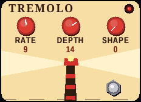
Tremolo
Pulses the volume, from a gentle throb to a hard on-off chop.
RATE · DEPTH · SHAPE
Try it on electric piano or guitar.
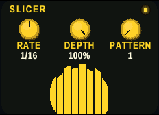
Slicer
Chops the sound into rhythms locked to the tempo, with eight patterns to choose from.
RATE · DEPTH · PATTERN
Try it on pads, for a pulsing gate.
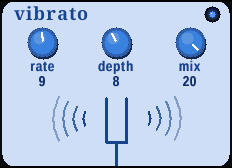
Vibrato
Wobbles the pitch, like a singer's vibrato or a warped tape.
RATE · DEPTH · MIX
Try it on flute or strings.
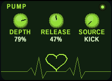
Pump
Ducks the sound on every kick drum (or every beat), so the part breathes with the groove.
DEPTH · RELEASE · SOURCE
Try it on pads and bass.
SPACE
Rooms and echoes. Shared by the whole band: the first knob is how much this instrument sends.
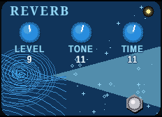
Reverb
Puts the band in a room or a hall.
LEVEL · TONE · TIME
Try it on everything, a little.
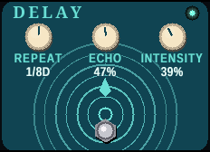
Delay
Echoes in time with the tempo.
REPEAT · ECHO · INTENSITY
Try it on a lead melody.
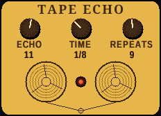
Tape Echo
Warmer, darker echoes, like an old tape machine.
ECHO · TIME · REPEATS
Try it on vocal-like leads, dub drums.
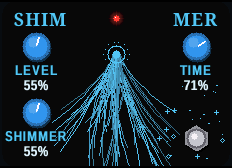
Shimmer
A reverb whose tail rises an octave with each repeat: glowing and angelic.
LEVEL · TIME · SHIMMER
Try it on pads and slow chords.
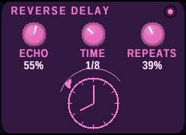
Reverse Delay
Echoes played backwards, swelling into each note.
ECHO · TIME · REPEATS
Try it on a lead or guitar.
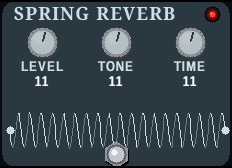
Spring Reverb
The splashy, boingy reverb from a guitar amp.
LEVEL · TONE · TIME
Try it on drums and guitar.
PITCH
Change the notes themselves.
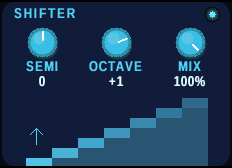
Shifter
Moves the sound up or down by semitones or octaves, blended with the original.
SEMI · OCTAVE · MIX
Try it on drums an octave down.
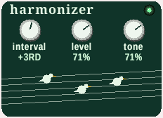
Harmonizer
Adds a second voice at an interval, like a third or a fifth.
INTERVAL · LEVEL · TONE
Try it on lead melodies.
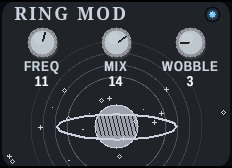
Ring Mod
Metallic, bell-like and robotic: the sound multiplied by a tone.
FREQ · MIX · WOBBLE
Try it on drums or a lead.
OTHER
Strange and wonderful.
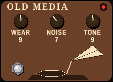
Old Media
A worn tape or record: wobble, hiss and crackle.
WEAR · NOISE · TONE
Try it on strings or piano.
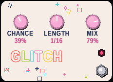
Glitch
Now and then a step stutters and repeats, locked to the beat.
CHANCE · LENGTH · MIX
Try it on drums or a lead.
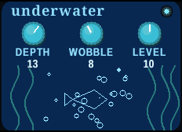
Underwater
Muffled and drifting, like hearing the band from the bottom of a pool.
DEPTH · WOBBLE · LEVEL
Try it on a guitar or pad.
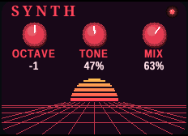
Synth
Adds a square-wave synth an octave or two under the lowest note.
OCTAVE · TONE · MIX
Try it on pads, for a built-in bass.
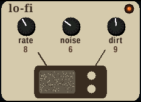
Lo-Fi
Grainy and dull, like a cheap sampler or an old radio.
RATE · NOISE · DIRT
Try it on drums or keys.
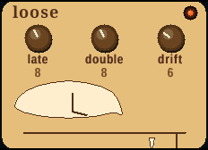
Loose
Plays a part late and human, with a second player a step behind.
LATE · DOUBLE · DRIFT
Try it on drums, to loosen a stiff beat.
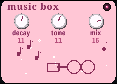
Music Box
A little plucked bell an octave up on every note.
DECAY · TONE · MIX
Try it on pads or piano.
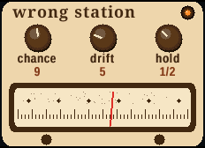
Wrong Station
Now and then tunes the instrument to a neighbouring sound, with a burst of static, then back, as if turning a radio dial.
CHANCE · DRIFT · HOLD
Try it on the lead, or the drums (it changes kit).
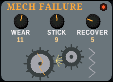
Mech Failure
The instrument wears out as it plays: missed notes, stuck notes, notes out of tune, until it suddenly works again.
WEAR · STICK · RECOVERY
Try it on a piano or a drum machine.
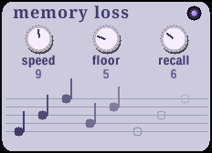
Memory Loss
Each time the pattern comes round, a few more notes are forgotten until only fragments remain. RECALL brings them back in waves.
SPEED · FLOOR · RECALL
Try it on a busy part, to strip it back.
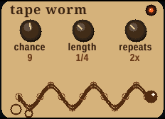
Tape Worm
Keeps the last few steps played and now and then loops a fragment of them.
CHANCE · LENGTH · REPEATS
Try it on drums or a bassline.
Good to know
An instrument can't have the same pedal twice (or Glitch with Loose). PLAY to stop also cuts every echo.
Wrong Station always tunes back to your own sound when the music stops, and while the sound editor is open, so a borrowed sound is never saved.
If a pedal won't switch on and CPU FULL shows, switch another off first. Phaser, Filter Seq and Wah use the most. If the sound crackles, switch a pedal off.
Beats and patterns
Each instrument has ten patterns, A–J, one to four bars long: think verse, chorus, fill. PRESETS picks one; while playing, it switches at the end of the current pattern. Turn to an empty one and it takes the length of the one you were just on, so you can keep playing straight into it.
Drums, empty pattern, SEQ. Kick on white keys 1, 5, 9, 13; snare on 5 and 13; hats on every other key. PLAY.
Write a bassline in B while A plays, then turn PRESETS to B.
Tempo and swing
On the home screen, KNOB 1 is the tempo and KNOB 2 the swing, from straight (50 %) to a heavy shuffle (66 %).
The drum grid.
Drum beats
Choose the drums and press SEQ for the drum grid. The first six black keys pick a drum; the 16 white keys switch its hits on and off. KNOB 4 (or OCT- OCT+) changes bar, KNOB 1 sets the length.
KNOB 3 sets how hits play: SOFT, LOUD, SHORT, and so on. To change one hit, hold its key and turn KNOB 3.
Live recording
Press SEQ, then REC (LIVE shows). Tap REC and play: the music starts and your notes are snapped to the beat, added to what's there. Tap REC to stop.
Step by step
For lead, pads and bass, SEQ shows a piano roll. ALGORITHM moves the cursor; play a key to write a note (hold several for a chord). The knobs set the note at the cursor and the next ones:
| KNOB 1 BARS | Pattern length: 1–4 bars. |
| KNOB 2 LEN | Note length: 1/16 up to a whole bar. |
| KNOB 3 EXP | How it's played: NORMAL, SOFT, LOUD, SHORT (staccato), PUNCH (accent), SMOOTH (legato), PLUCKED. |
| KNOB 4 NOTE | Move the note up or down. |
| ARP | Tap: tie. Hold: rest. |
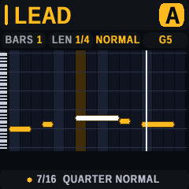
The step recorder.
Live recording.
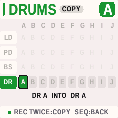
The copy page.
Copying
Hold SEQ for the copy page. SELECT and PRESETS pick what to copy; REC twice copies it into the pattern you're editing. Lead, pads and bass can copy from each other. Quicker: on the home screen, hold ARP and turn PRESETS to copy into the next letter.
Moving and clearing
Hold OCT- or OCT+ to move a pattern down or up an octave. Hold REC in the step recorder to clear it.
Playing live
For jamming over your patterns.
Arpeggiator (ARP)
Hold a chord and it plays the notes in turn, in time. Tap ARP for on/off, hold for its settings.
| KNOB 1 | On / off. |
| KNOB 2 | Rate: 1/4 to 1/32. |
| KNOB 3 | Octaves: 1 to 4. |
| KNOB 4 | Direction: up, down, random. |
Not on drums.
Beat repeat (hold GLO)
Hold GLO while playing: the current slice loops until you let go. The first five white keys pick its length, from 1/2 bar to 1/32.
Mixer (GLO)
Tap GLO. KNOB 1–4 set the four volumes; FX SEL ENV LFO mute and unmute each instrument.
Key lock and lights
Tap GLO again for the KEY page. ALGORITHM picks the key; KNOB 1 LOCK makes the keys play only notes in it; KNOB 2 LIGHTS lights those keys.
Octaves, MIDI and themes
OCT- OCT+ change octave. For MIDI, hold HOME and turn ALGORITHM to pick a channel (or OMNI). A MIDI keyboard on USB or the TRS jack plays the chosen instrument and records just like the FM-1's own keys, in the step recorder and in live recording; on drums, the General MIDI notes (36 kick, 38 snare, 42 hat ...).
Hold HOME and turn PRESETS for the theme menu: Paper (light, the default), Dark, Neon or LCD (an old green pocket screen). The screen changes as you turn; let go of HOME to close the menu. The theme stays, even after clear all or loading a project.

The arpeggiator.

The mixer.

The KEY page.
Song arrangement
SUPER SEQ strings patterns into a song. Each instrument has its own row.
SUPER SEQ
Press SEQ twice. There are ten songs, A–J, each up to eight boxes long. Each box plays a pattern once, then moves on.
- A–J: that pattern. Blank: keep going. X: silence.
- So
A...B.A.plays A A A A B B A A.
| SELECT | The player's row. |
| KNOB 1 | SUPER SEQ on / off. While on, it picks the patterns instead of PRESETS. |
| ALGORITHM or KNOB 2 | The box. |
| KNOB 3 / 4 | The box's pattern (blank, A–J or X) / the song's length (1–8 boxes). |
| PRESETS | The song. Hold ARP and turn: copy it into the next letter. |
Keeping your work (SAVE)
Your work saves itself when the music stops. To keep versions, press SAVE: ALGORITHM picks one of four slots, REC twice saves, PLAY twice loads. Older saves still load.

SUPER SEQ: a row per player.

The save page.
Advanced sound editing
Every sound is a synth you can reshape and save as your own.
The sound editor (EDIT)
Press EDIT. ALGORITHM picks the page, KNOB 1–4 change it. The first page, INSTR, is the sound browser.
| Page | KNOB 1 | KNOB 2 | KNOB 3 | KNOB 4 |
|---|---|---|---|---|
| INSTR | Type: lead, pad, bass | Group | Sound in the group | USER slot to save to |
| MAIN | Glide | Brightness (cutoff) | Resonance | Filter envelope |
| OSC | Wave 1 | Wave 2 | Wave 2 tuning | Mix / FM amount |
| ENV | Attack | Decay | Sustain | Release |
| LFO | Rate | Depth | Target: pitch, filter, volume, PWM | Wave: tri, square, saw, random |
MAIN: brighter or darker, and glide. ENV: how a note starts and fades. LFO: movement, like vibrato or tremolo. Waves include pulse and sync (wave 2).
On drums: a KIT page, then pitch, decay and level for each drum.
Your own sounds
Press REC twice on any page of the sound editor to save your sound, so a tweak is never lost when you move on. It saves to the USER slot shown on the bottom line (SAVE U1); pick another with KNOB 4 on INSTR (or KIT). There are 8 slots per type and 4 for kits. They are kept in your saves and survive clear all.
Voices
Lead, pads and bass share nine voices (four each for lead and pads, one for bass). A bass plays one note per step.
INSTR.

OSC.

KIT.
Complete controls
Every control in one place.
The rules
SELECT
The instrument.
PRESETS
The pattern; on pedal pages the kind of pedal; in SUPER SEQ the song.
ALGORITHM
Chooses on the page; never changes page.
KNOB 1–4
The settings on screen. KNOB 1 is on/off where there is one.
TAP OR HOLD
Pedals and ARP: tap on/off, hold to open. GLO: tap mixer, hold beat repeat.
REC TWICE
Confirms saving, copying and clearing.
PRESS AGAIN
EDIT: sound, pedals, home. SEQ: recorder, SUPER SEQ. GLO: mixer, KEY, home.
HOME
Home, from anywhere.
Anywhere
| PLAY | Start (from step one) and stop. |
| SELECT | The player. |
| PRESETS | Its pattern, A–J. Hold ARP: copy into the next letter. Hold HOME: the theme menu. |
| FX SEL ENV LFO | Tap: the pedal on / off. Hold 0.5 s: the pedal's page. |
| EDIT | The sound editor (from INSTR); again: the pedalboard; again: home. |
| SEQ | The step recorder; again: SUPER SEQ; again: back to the step recorder. Held in the step recorder: the copy page. |
| ARP | Tap: on / off. Hold 0.5 s: the arpeggiator's page. |
| GLO | Tap: the mixer, then the KEY page, then home. Hold: beat repeat. |
| SAVE | The save page (again: close). |
| HOME | Home. Held, with PRESETS: the theme menu (Paper, Dark, Neon, LCD); with ALGORITHM: the MIDI channel. |
| OCT- OCT+ | Tap: the keys' octave (drum step recorder: the bar). Hold 0.5 s: the pattern being edited moves down / up an octave. |
| MASTER | The volume. |
Home screen
| ALGORITHM | The sound or kit, through every group. |
| KNOB 1 / 2 | Tempo / swing (50–66 %). |
| REC | Hold 1 s, then REC again: clear everything. |
Pedal and arpeggiator pages
| PRESETS / ALGORITHM | Pedal: the kind / the pedal within it. |
| KNOB 1 | On / off. |
| KNOB 2 / 3 / 4 | The pedal's three knobs; arpeggiator: rate / octaves / direction. |
Pedalboard (EDIT twice)
| ALGORITHM | The pedal slot. |
| PRESETS | Another pedal in that slot. |
| KNOB 1 / 2–4 | On / off / its three knobs. |
Step recorder
| KNOB 1 / 2 / 3 / 4 | Lead, pads, bass: bars / note length / expression / note up-down. Drums: bars / – / expression / bar shown. |
| ALGORITHM | The cursor. |
| Keys | Lead, pads, bass: write notes (held together: a chord). Drums: black keys choose the drum, white keys switch steps. |
| ARP | Tap: tie. Hold: rest. |
| REC | Tap: live recording. Hold 1 s: clear the pattern. |
| SEQ | Tap: SUPER SEQ. Hold: the copy page. |
Live recording
| REC | Recording on / off (starts the music if stopped). Hold 1 s: clear the pattern playing. |
| KNOB 1 / 2 / 3 | Bars / cursor / bar shown. |
Copy page
| SELECT / PRESETS | The player / the pattern to copy from. |
| REC twice | Copy it into the pattern being edited. |
| SEQ | Back, without copying. |
Sound editor
| ALGORITHM | The page: INSTR, MAIN, OSC, ENV, LFO (drums: KIT, then each drum). |
| KNOB 1–4 | The page's four settings. |
| REC twice | Any page: save the sound to the USER slot (chosen with KNOB 4 on INSTR / KIT). |
SUPER SEQ, mixer, KEY and save page
| SUPER SEQ | KNOB 1–4: on-off / box / its pattern / length. ALGORITHM: the box. PRESETS: the song. |
| Mixer | KNOB 1–4: the volumes. FX SEL ENV LFO: mute. |
| KEY | ALGORITHM: the key. KNOB 1: lock. KNOB 2: lights. |
| Save page | ALGORITHM or KNOB 1: the slot. REC twice: save. PLAY twice: load. |
Gallery